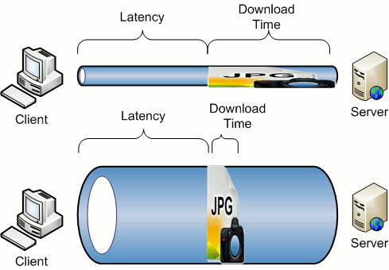

Mobile only?
What is This?
Responsive vs Mobile-only
- Mobile apps still need to be responsive
- So what's the difference?
- "Responsive" loads everything
- (That can be a lot)
- Why not go all in Responsive?
Optimization / User Experience
Maintainability
- Multiple designs in one "template"
- Separation of designs can be messy
- Custom elements
It's an App
(vs a web site)
- What is the difference?
- Responsive works really well with websites
- Behaviors
Mobile-only Design
- Reduced Functionality
- No admin functions
- APIs
- Avoid duplication
- Template
Viewport
- What does a viewport do?
- Most basic setting
-
<meta name="viewport" content="width=device-width, initial-scale=1">
-
- What happens if it's not set?
Mobile-only Frameworks
Examples
Swipe
- jQuery Mobile: swipeleft and swiperight
- swipe left to go right, swipe right to go left
// swipe to the left
$(element).on('swipeleft', function(){
alert("swiped to the left")
})
Transitions
- What does a swipe mean if there's no transition associated with it?
- Transitions are essential for good user experience.
$(element).on('swipeleft', function(){
$.mobile.changePage(url, {transition: ‘slide’});
// $.mobile.changePage(url, {transition: ‘slide’, reverse: true});
})
Pre-fetching
- What does a transition mean if it's a poor transition?
- Pre-fetching is essential for a good user experience!
- 2 ways to declare it
- Within the
<a><a href="prefetchThisPage.html" data-prefetch> ... </a>
- Within the js
$.mobile.loadPage( pageUrl, { showLoadMsg: false } );
- Within the
All Together Now!
- Swipe a transition to a pre-fetched page.
-
// pre-fetch the page onload $(document).ready(function(){ $.mobile.loadPage( nextUrl, { showLoadMsg: false } ); // on swipeleft, progress to next url $(element).on('swipeleft', function(){ $.mobile.changePage(nextUrl, {transition: 'slide'}); }) }); - Swipe Demo
Lists are Easy
- All we do is lists sometimes
- jQuery Mobile gives some nice styles for lists
<ul data-role="listview"> <li><a href="acura.html">Acura</a></li> <li><a href="audi.html">Audi</a></li> <li><a href="bmw.html">BMW</a></li> </ul>
Everyone Loves Slidey Menus
- Set z-index of the menu to be behind the content
#pagebody { position: relative; z-index: 99999; } #navmenu { display: block; position: fixed; width: 300px; left: 0px; top: 0px; z-index: 0; } - Move the content with a jQuery.animate
function openit() { pagebody.animate({ left: "290px" }, { duration: 300, queue: false }); }
jQuery Mobile
- This lib is designed for prototypes
- The problem
- The solution
The Network
The Weak Link
-
Latency vs Bandwidth

Do What You Can
-
Use CDNs for large included libs
<script src="https://code.jquery.com/mobile/1.4.2/jquery.mobile-1.4.2.min.js"></script>
-
RequireJS
- Asynchronous Module Definition
require(['jquery', 'jquery-mobile'], function($){ ... });
Inline Styles
<html>
<head>
<title>My Title</title>
<style>
...
</style>
...
- First trip!
-
Limit to ~14k
- Keep it short
- Keep it meaningful
Offline Functionality
-
Appcache Manifest
-
<html manifest="myManifest.appcache">
- (set to
text/cache-manifest)CACHE MANIFEST /styles.css /scripts.js
-
-
window.localStorageobject- The new Cookie!
<Thank You!>
Important contact information goes here.